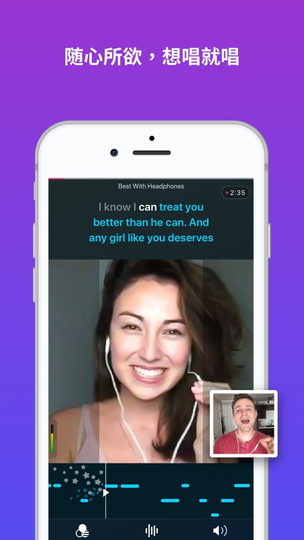

第一次用 Smule？五分钟从注册到唱出第一首歌
不用懂乐理、不用买设备，一台手机就能录歌、合唱、甚至开直播。这篇带你从零到会用，连常见坑都提前帮你踩过。
这篇能带你从完全不懂到用起来——不需要任何唱歌基础，也不需要折腾任何技术设置。Smule 简单说就是一个「手机 K 歌 + 陌生人合唱社区」，但它比普通 K 歌 App 好玩的地方，在于它把"和别人一起唱"这件事做到了极致。你可以把它想成一个线上音乐排练室：有人在练独唱，有人在组队排二重唱，还有人挂出一张"求合唱"的海报等陌生人来搭伙——smule官网 上能看到最真实的社区氛围。

五分钟上手：从下载到唱出第一首
整个过程不超过五分钟，跟着做就行——安装包从 官方下载 拿就行。
第一步：注册账号。装好 App 打开后，你可以用邮箱、手机号，或者直接用 Facebook / Google / Apple ID 一键登录。这里提个醒：很多人后来登不上自己的旧账号，就是因为当初用了不同方式注册、结果系统给建了两个独立账号。最稳的做法是先用邮箱注册主账号，登录成功后去设置里把 Facebook 和 Google 都绑上，以后用哪种方式都能进同一个号。
第二步：找一首歌开始唱。首页下方点中间那个大按钮「Sing」，就能按分类或热门榜选歌。中文歌、英文歌、日语歌都有，热门歌的歌词和伴奏都是现成的。点进一首歌，选独唱（Solo）就可以开始录了。
第三步：录的时候把耳机插上。这一步别省——直接外放录，Smule 会把伴奏和你的声音一起录进去，后期合成出来就是糊的。耳机嘛，有线的最好，蓝牙的经常会有延迟，唱完你会发现自己的声音比伴奏慢半拍，特别难受。

第四步：录完修一下再发布。Smule 自带一键修音，默认就是开着的，你跑调的地方它会自动拉回准调。也可以手动调音量平衡、加一点混响。满意了就点「Publish」发布——你的第一首歌就上线了。
上手后先玩这三个功能
唱完第一首，别急着埋头苦练。先玩透这三个功能，你会发现 Smule 不只是"自己录歌给自己听"。
第一个：Open Call，陌生人合唱海报。这是 Smule 独有的玩法——你录一半（比如只唱主歌），发布时打开 Open Call 开关，选「Anyone」开放给所有人。相当于你在社区里贴了张海报：「这首歌我录了一半，谁来和我一起？」然后真的会有陌生人点进来补完另一半。热门歌刚上热榜时发起 Open Call，一天之内能收到几十个人的加入请求，每个人都会生成一个独立的合成版本，你可以挑喜欢的留下、不喜欢的直接删掉，想知道怎么设置加入条件、手动审核加入者这些进阶玩法的，可以去翻一下 smule文档。
第二个：加入别人的合唱。翻首页推荐时，看到有人发起的 Open Call 想试试？直接点进去就可以录你的段落加入。发起人会收到通知，回听你的版本后可能点赞、可能关注你，一来二去就混了个脸熟。如果你唱的是对方特别想要的声部（比如他在找女高音对唱），被接受的概率很高。
第三个：Sing Live 直播唱歌。Smule 的直播功能叫 Sing Live，和抖音那种聊天直播不一样——它就是纯粹地唱，观众可以点歌、可以送打赏。VIP 用户开直播时甚至不需要开摄像头，只出声音就行，社恐也不用慌。开播前记得换有线耳机、连 Wi-Fi，不然观众会说你声音和伴奏不同步。
小白的三个常见疑问
这些问题几乎每个新手都会碰到，提前知道少走弯路。
唱完发现声音和伴奏不同步怎么办？
90% 的情况是蓝牙耳机的锅。蓝牙耳机信号传输有延迟，你自己听着是同步的，但 Smule 录下来的音轨对不上。最快的解决办法就是拔掉蓝牙耳机，换有线的重录一遍。如果换了还不行，试试关掉后台所有 App（尤其是视频和游戏）、重启手机、更新 Smule 到最新版本。极端情况才需要卸载重装——放心，你的作品存在云端，和账号绑定，卸载再装不会丢。
登不进去账号、或者登错号了？
最常见的是"当初用邮箱注册了 A 号，后来手滑用 Facebook 登录，系统又给建了个 B 号"。现在 Facebook 登录默认进 B 号，你想回 A 号就登不上。解决方法是退出所有登录态，用邮箱+密码方式手动登录 A 号，进去之后在账号设置里把 Facebook 绑定上，以后两种方式就互通了。收不到验证码的话，检查一下短信是不是被归到垃圾文件夹了，Gmail 用户尤其注意垃圾邮件箱。
怎么才能让更多人听到我的歌？
先别想着涨粉，先把作品质量做好——Smule 社区的逻辑很朴素，作品好→被算法推荐→被更多人听到→自然涨粉。发布时间选晚上 8 到 11 点的活跃时段，选中等热门的歌（几千到几万次演唱那种），太热门的歌几百万人在唱，你的作品很容易被淹没。唱完之后别关 App，有人点赞评论就回一下，有人加入你的 Open Call 就点进去听一下再感谢，这些互动社区都记着呢。
最后说一句
Smule 不像专业录音软件那样有陡峭的学习曲线，它就是拿来玩的。第一首歌跑调没关系，Open Call 没人加入也没关系，重要的是你开口唱了。当有一天你收到一条陌生人的评论说"唱得好感动到哭"——那种快乐，比你唱得多好都重要。
想更进一步的话，可以试试去翻一下完整的功能说明，或者专门研究一下怎么发起一个能吸引几十人加入的 Open Call。记住，那些唱得特别好的老玩家，也是从第一首跑调的独唱开始的。